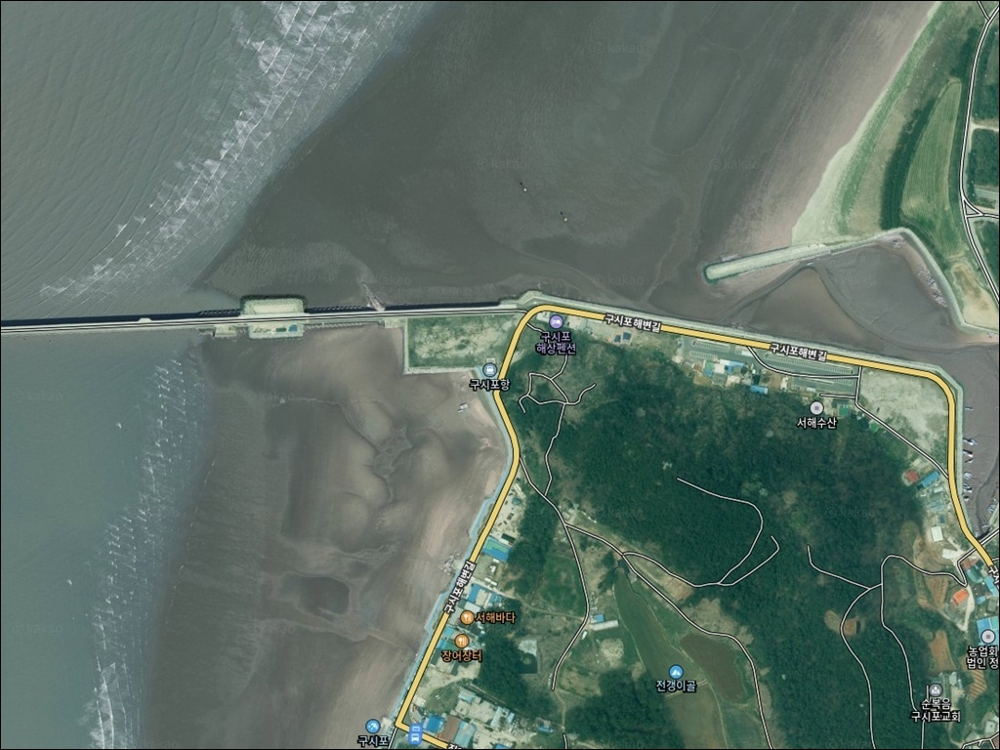
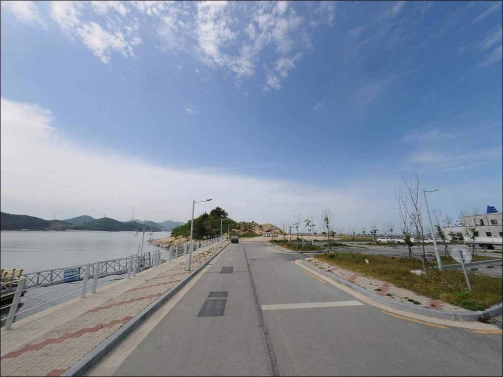
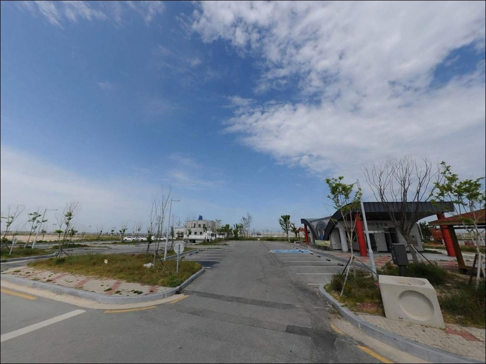
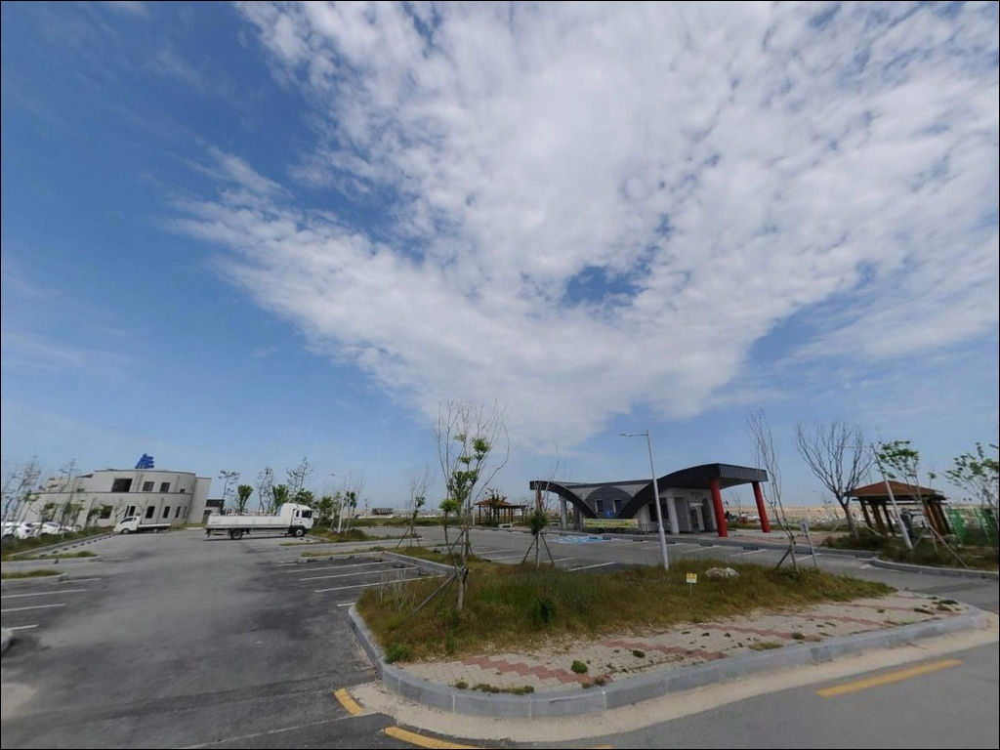
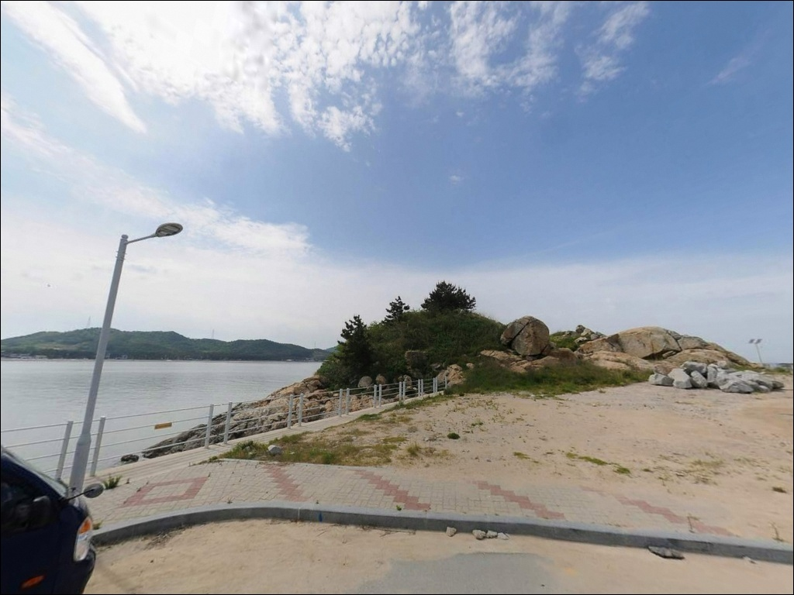
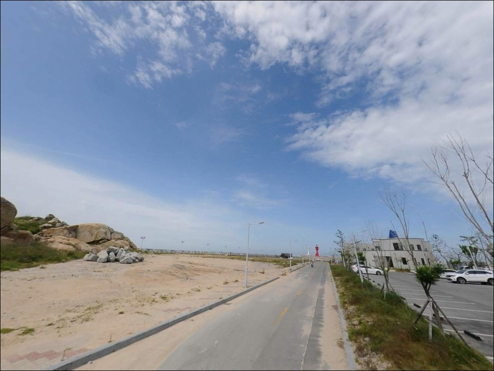
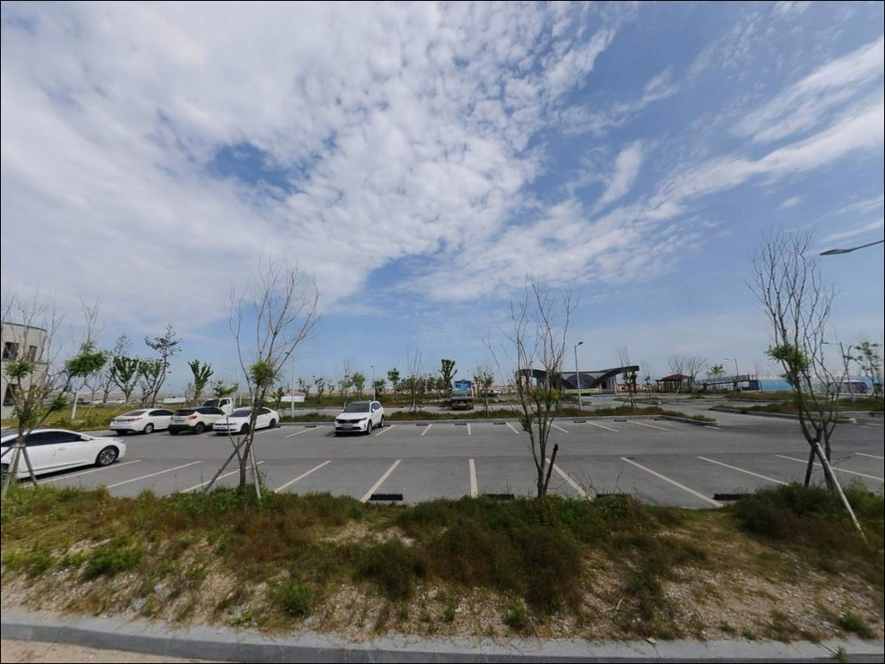
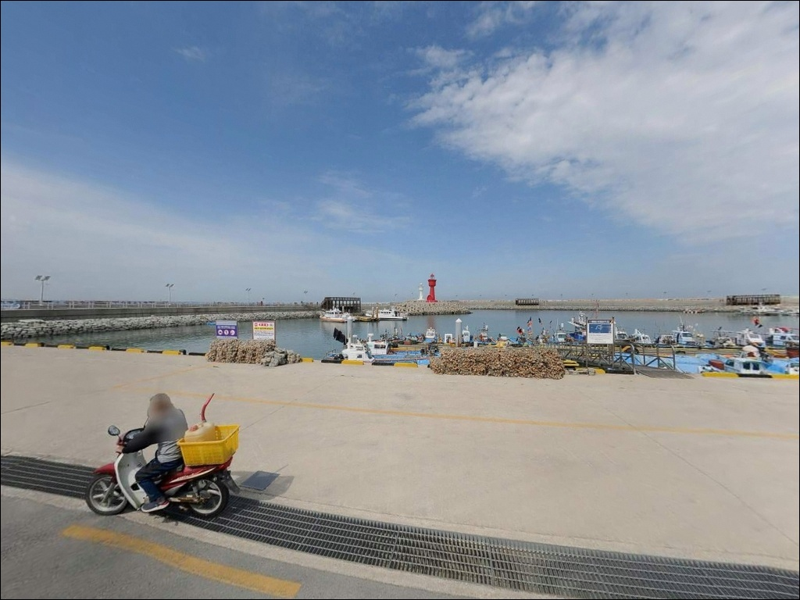
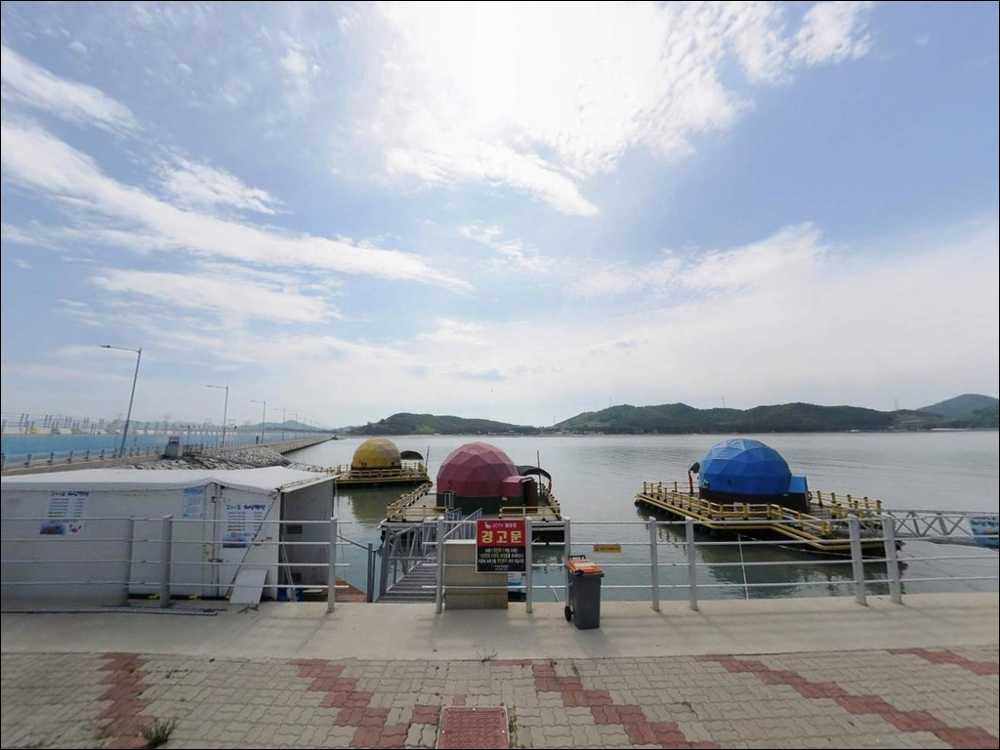

이 페이지에는 광고(제휴 링크 포함)가 있으며, 광고 링크를 통해 구매하면 운영자가 판매 수익 또는 수수료를 받을 수 있습니다. 포인트 사진: 카카오맵 스카이뷰·로드뷰. 이 페이지의 지도·사진 이미지는 카카오맵의 실제 서비스 이미지와 다를 수 있습니다.

구시포항
전북 고창군 상하면 자룡리 산 96
구시포항은 서해 칠산바다에 자리한 국가어항으로,
수심이 전반적으로 얕은 구조입니다.
조수간만 차가 큰 서해 특성상
물때를 무시하고 찾아가면
간조 때 방파제 내항 일부 구간이
채비를 운용하기 어려운 수준으로 얕아집니다.
이 글은 구시포항의 방파제 지형 구조,
낚시 방식 적합성, 진입 동선, 차박 여건에 집중합니다.
조황 단정이나 특정 어종 보장은
이 글의 범위에 포함되지 않습니다.

구시포항은 서해안 고속도로와
고창·담양간 고속도로를 이용하면
접근성이 양호한 편입니다.
항까지 이어지는 진입로는
왕복 2차선 포장도로로 정비되어 있어
승용차는 물론 캠핑카까지
진입에 큰 부담이 없는 구조입니다.
가막도와 항을 연결하는 연육도로 길이는 811.6m입니다.
국가어항 규모답게 항 내부에
넓은 물양장과 선양장이 조성되어 있어
주차 공간이 비교적 넉넉한 편이며,
대형 차량이라도 항 내부에서
회차에 어려움이 없는 수준입니다.
물양장 및 선양장 구역은 어선 조업 공간이므로
어선 출항 시간대에는 차량 이동 여지를
미리 확인해 두는 것이 좋습니다.
방파제 끝단까지 차량 진입은 제한될 가능성이 있어
현장에서 먼저 확인하는 편이 안전합니다.

구시포항 자체는 어업 작업 공간이 중심이라
항 내부에서 차박을 메인으로 삼기에는
공간 여건이 넉넉하지 않습니다.
바로 인접한 구시포해수욕장 일대가
주차 공간과 개방성 면에서 더 현실적인 선택입니다.
해수욕장 쪽은 해송 방풍림을 끼고 있어
바람 차단 여건이 어느 정도 갖춰져 있습니다.
관광지와 어촌이 혼합된 지역 특성상
인근에 가로등과 야간 조명이 일부 있어
완전한 암흑 환경은 아닙니다.
방파제 외곽 쪽은 조명이 적어질 수 있으므로
개인 헤드랜턴은 필수입니다.
차박 목적으로 방문한다면
914해변캠핑장, 구시포노을캠핑장 등
인근 공식 캠핑 시설이 있으니
항 주변 임시 체류가 여의치 않을 경우
이 시설들을 미리 확인해 두는 편이 좋습니다.

구시포항에는 2025년 12월 준공된
수산물 위판장이 있습니다.
지상 2층 규모로 냉동창고와
어업인 회의실이 포함된 시설입니다.
화장실과 주차장은
국가어항 관리 기준에 따라 이용 가능합니다.
반경 1~3km 구간에는
구시포 해수찜월드를 비롯해
캠핑장과 식당가가 분포합니다.
해수욕장 성수기 기간에는 주변 상권이
더 활성화되는 구조이므로
비성수기 방문이라면
식수와 식재료는 출발 전에 충분히 준비해 두는 것이 좋습니다.

구시포항 방문 전 가장 먼저 확인할 것은 물때입니다.
칠산바다는 조수간만 차가 큰 서해 해역으로,
간조 시 항 내부 수심이 크게 낮아지는 구조입니다.
바다타임에서 구시포항 기준 물때를 확인하고
만조 전후 2시간 구간을 기본 입장 타이밍으로
출발 시각을 맞추는 것이 기본 전략입니다.
서해안은 바람의 영향을 크게 받습니다.
기상청 예보는 출발 당일 아침에 한 번 더 확인하는 것이
헛걸음을 막는 조건입니다.
방파제 테트라포드 구간은 발판이 불안정하므로
야간에는 올라서지 않는 것이 원칙이며,
구명조끼와 미끄럼 방지 신발은
방파제 낚시의 기본 준비물입니다.
갯바위 구간(나룻방 밑)을 탐색할 계획이라면
썰물 때 고립 위험이 있으므로
조석표를 미리 확인하고
진입과 철수 시각을 여유 있게 잡는 것이 좋습니다.
어항 내 어업 시설과 어선 작업 구역에는
접근을 삼가는 것이 기본 매너입니다.

구시포항은 가막도와 연결된 연육도로를 기반으로
와인잔 형태로 설계된 독특한 구조의 항입니다.
북방파제 길이 410m, 남방파제 180m로
북방파제가 외해(서쪽)를 향해 길게 뻗어 있습니다.
북방파제 외항 끝단이 외해 노출도가 가장 높은 자리로,
조류가 살아있을 때 낚시 여건이 가장 좋아지는 구간입니다.
수심은 전반적으로 얕은 편입니다.
내항 방향은 조류가 약하고 모래펄 저질이 주를 이루며,
방파제 끝단 방향으로 갈수록
수심 변화가 생기는 구조입니다.
물때가 살아있는 만조 전후 구간에 방파제 외항 방향을
우선 탐색하는 것이 이 포인트의 기본 접근 방식입니다.
바다타임에 "나룻방 밑 갯바위"가
구시포항 인근 낚시 포인트로 등록되어 있습니다.
조류가 닿는 가장자리 구간을 찾는 것이 핵심이며,
썰물 시 진입 가능 여부를 먼저 확인해야 합니다.
출조 전 구시포항 최신 조황은
꼭 검색해 보시기 바랍니다.

구시포항에서 가장 무난한 방식은 원투낚시입니다.
방파제 외항 구간과
해수욕장 접경 모래 바닥 구간은
원투 채비를 멀리 보내
붕장어, 보리멸, 망둥어 계열을
바닥층에서 공략하기에 적합한 구조입니다.
물때가 살아있는 만조 전후 타이밍이
이 방식에서 조과를 기대하기 좋은 조건입니다.
루어낚시는 북방파제 끝단과
외항 방향 조류 받는 자리에서
농어나 우럭 계열을 노리는 방식이
지형 조건과 맞습니다.
라이트 루어로 방파제 끝단을
천천히 탐색하는 방식이
서해형 방파제 루어낚시의 기본 공략법입니다.
찌낚시는 북방파제 외항 쪽 석축 구간이나
테트라포드 벽면 구간에서
조류가 흐를 때 시도해 볼 수 있습니다.
주꾸미는 구시포항 공식 어항 기록에 등재된 어종으로,
가을 시즌에 이 일대에서 기대해 볼 수 있는 대상입니다.

구시포항 조황이 여의치 않거나
주차 여건이 맞지 않을 때는
동호해수욕장 방파제가 첫 번째 대안입니다.
구시포 북쪽 방향으로 해안도로를 따라
차로 20분 내외 거리에 있으며,
칠산바다 같은 해안선을 공유해
물때와 어황 패턴이 유사합니다.
조류 소통이 강한 포인트를 원한다면
새만금 방조제 인근 가력도항이
다음 선택지가 됩니다.
구시포항보다 다양한 어종을
기대해 볼 수 있는 곳으로 알려져 있습니다.
이동 거리가 있으므로
플랜 A 실패 시 이동 동선을 미리 잡아두는 것이
출조 효율을 높입니다.
차박 대안 장소로는
고창군이 운영하는 동호국민여가캠핑장이 있습니다.
해송 군락지를 배경으로 한 오토캠핑장으로
예약 기반으로 이용할 수 있는 공식 시설입니다.

원투낚시나 라이트 루어를 즐기는 낚시인이라면
구시포항의 모래펄 지형과
북방파제 410m의 외항 구조는
잘 맞는 조건입니다.
수심이 얕은 만큼 물때 의존도가 높아
만조 전후 타이밍을 잡지 않으면
조과를 기대하기 어려운 포인트입니다.
차박은 항 내부 어업 시설 특성상
인근 구시포해수욕장 쪽으로 분산하는 것이
현실적인 선택입니다.
해수욕장 해송 방풍림 아래에서 하룻밤 머물며
다음 날 만조 타이밍에 맞춰
방파제 외항 쪽으로 이동하는 동선이
칠산바다 방파제 낚시와 차박을 함께 즐기는
가장 효율적인 방식입니다.